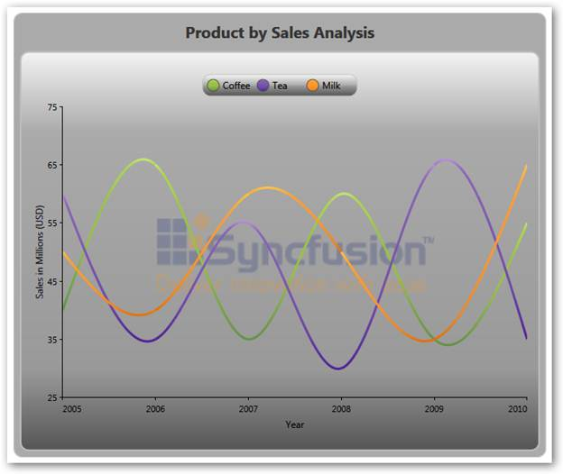
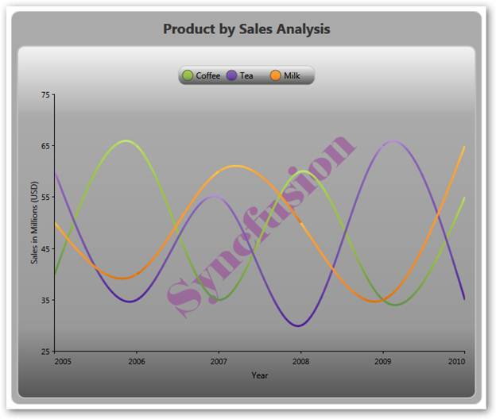

Essential Chart supports watermarks which can be used to show text or images behind the chart area.
· Watermarks can be rotated by specifying the rotation angle for the text or image watermark.
· The opacity of a watermark can be set as a percentage.
· Watermarks can be aligned horizontally or vertically with respect to the chart area.
Use Case Scenarios
· Watermarking is used in copyright protection systems. They are intended to prevent or detect illegal copying of charts by unauthorized users.
· Also, chart watermarks provide indisputable proof of the image origin or its author.
· Owner identification like a username can be added to the chart so it is easy to find the owner.
· A unique and secure digital signature can be added to each chart. This can be used to verify the origin and generation details of a chart.
|
Property |
Description |
Type |
Data Type |
|
Watermark |
Sets the text or image watermark behind chart area. |
Dependency |
Brush |
To access the chart watermark demo:
1. Open the Syncfusion Dashboard.
2. Select User Interface.
3. Click the WPF drop-down list and select Explore Samples.
4. Browse to the path Chart.WPF\Samples\3.5\WindowsSamples\Chart Area\Chart Watermark Demo
Image Watermark
|
[XAML] <syncfusion:ChartArea.Watermark> <VisualBrush Stretch="None" Opacity="0.5" AlignmentX="Center" AlignmentY="Top"> <VisualBrush.Visual> <Image Name="img" Source="/WatermarkDemo;component/SyncLogo1.png"> <Image.LayoutTransform> <RotateTransform Angle="-45"/> </Image.LayoutTransform> </Image> </VisualBrush.Visual> </VisualBrush> </syncfusion:ChartArea.Watermark> |
|
[C#] Image image = new Image() { Source = new BitmapImage(new Uri(@"D:\WatermarkDemo\SyncLogo1.png")), LayoutTransform = new RotateTransform() { Angle = -45 } }; this.chartArea.Watermark = new VisualBrush() { Visual = image, Stretch = Stretch.None, AlignmentX = AlignmentX.Center, AlignmentY = AlignmentY.Top, Opacity = 0.5 }; |

Figure 70: Image Watermark
|
[XAML] <syncfusion:ChartArea.Watermark> <VisualBrush Stretch="None" Opacity="0.8" AlignmentX="Right" AlignmentY="Bottom"> <VisualBrush.Visual> <TextBlock Name="txt" Text="Syncfusion" FontSize="64" Foreground="Red" FontFamily="Microsoft Sans Serif"> <TextBlock.LayoutTransform> <RotateTransform Angle="325"/> </TextBlock.LayoutTransform> </TextBlock> </VisualBrush.Visual> </VisualBrush> </syncfusion:ChartArea.Watermark> |
|
[C#] TextBlock text = new TextBlock() { Text = "Syncfusion", FontSize = 64, Foreground = Brushes.Red, FontFamily = new FontFamily("Microsoft Sans Serif"), LayoutTransform = new RotateTransform() { Angle = 325 } }; this.chartArea.Watermark = new VisualBrush() { Visual = text, Stretch = Stretch.None, AlignmentX = AlignmentX.Right, AlignmentY = AlignmentY.Bottom, Opacity = 0.5 };
|

Figure 71: Text Watermark